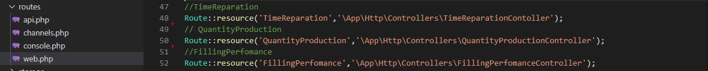

Features
CRUD adalah singkatan dari create, read, update, and delete. Keempat poin ini merupakan fungsi-fungsi utama yang diimplementasikan dalam aplikasi database melalui form. Ketika user mengisi form, data dalam form tersebut akan di proses oleh Controller dan dikirimkan ke database serta ditampilkan kembali di View.
Database
Buat database secara manual di phpMyAdmin. Nama database yang digunakan adalah futami_db dengan nama table tbl_filling_perfomance. Jangan lupa membuat id_filling_perfomance sebagai primary key dan Auto Increment.
Route

Route pada laravel adalah bagian yang mengatur rute pada project aplikasi yang kita bangun dengan laravel.misalnya kita membuat route “blog”. maka kita bisa memerintahkan untuk membuka view, menjalankan controller dan
lain-lain pada saat route blog di akses.
Untuk membuat route pada laravel biasanya pada file web.php yang berada di routes>web.php contohnya disini agar kita dapat mengakses halaman view. Pada gambar diatas TimeReparation menunjukan nama
url untuk kita akses, dan \App\Http\Controllers\TimeReparationController adalah alamat file controller yang disambungkan dengan route nya.
Controller
Controller merupakan salah satu bagian dimana seluruh fungsional web dibuat. Pada Controller dilakukan pengaturan untuk mengakses Model terkait dengan Database dan juga bagaimana mengirimkan datanya ke View. Berbagai pemrosesan juga dilakukan di dalam Controller.Contohnya adalah aktivitas CRUD (Create, Read, Update, Delete) yang prosesnya berjalan di dalam Controller.
1. Function index()
Variabel $data_index mengambil data yang ada pada table tbl_filling_perfomance. Yang mana data tersebut akan di-return pada halaman index dalam folder FillingPerfomance. Fungsi index() akan dieksekusi apabila kita mengakses halaman index melalui url. http://127.0.0.1:8000/FillingPerfomance/
2. Function create()
Function create() dijalankan saat kita mengakses url http://127.0.0.1:8000/FillingPerfomance/create-data. Dalam potongan kode diatas, function create() akan me-return sebuah view, yaitu file create-data yang berada pada folder FiliingPerfomance. Yang mana dalam file create-data tersebut terdapat sebuat form untuk menambahkan data baru.
3. Function store()
Semua string yang ada dalam form create akan dikumpulkan pada variabel $request dan dikirimkan ke database. Apabila berhasil maka akan me-return halaman index dan data akan bertambah. Function show() di akses lewat form yang ada pada file create-data dalam folder FiliingPerfomance.
4. Function show()
Apabila kita mengakses button Show pada halaman index, function show akan dijalankan. Yang mana variabel $tampil mengambil data dari table tbl_filling_perfomance berdasarkan id_filling_perfomance yang merupakan primary key. Function ini akan mengembalikan view tampil yang ada dalam folder FiliingPerfomance
5. Function edit()
Function edit() dijalankan apabila kita mengakses button edit yang ada pada halaman index. Variabel $edit mengambil data dari table tbl_filling_perfomance berdasarkan id_filling_perfomance yang merupakan primary key. Function ini akan me-return file edit yang ada dalam folder FiliingPerfomance.
6. Function update()
Function update() digunakan untuk mengubah atau memperbarui data. Fungsi ini dieksekusi saat user mengisi dan mengirimkan data pada form yang terdapat di file edit. Saat fungsi ini berhasil dijalankan, data akan diperbarui dan akan me-return halaman index.
7. Function destroy()
Function destroy() digunakan untuk menghapus data. Function ini dieksekusi ketika kita mengakses button delete yang ada dihalaman index. Fungsi ini menghapus data berdasarkan id_filling_perfomance yang merupakan primary key, dan mengembalikan view index.